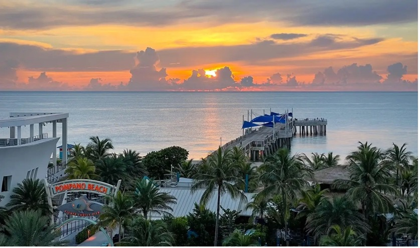
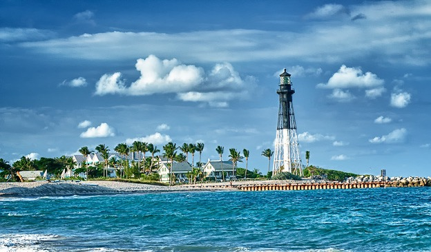
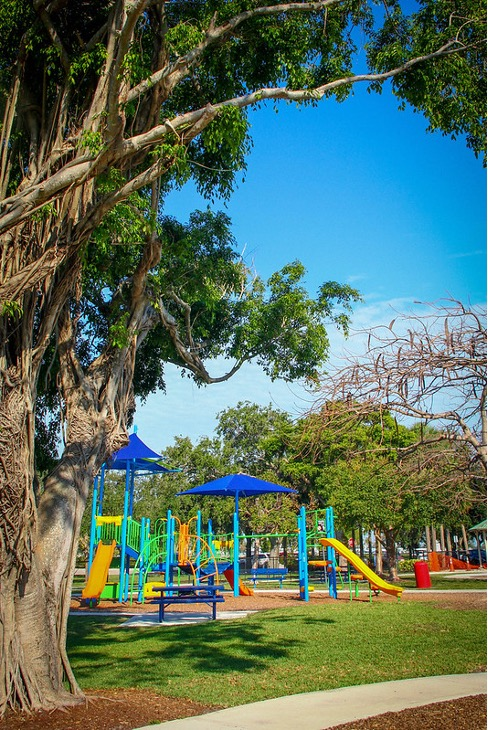

The Beach Pier
The newly renovated Pompano Beach Pier is a stunning oceanfront landmark perfect for fishing, scenic strolls, and watching the sunrise. With beautiful views, nearby restaurants, and beach access, it’s a great spot to relax and enjoy the ocean breeze.
Hillsboro Inlet Lighthouse
This historic lighthouse, built in 1907, stands tall at the Hillsboro Inlet and offers panoramic views of the Atlantic Ocean and Intracoastal Waterway. Though tours are limited, the lighthouse is a striking photo opportunity and a symbol of Pompano’s coastal charm.
Pompano Beach Park
Pompano Beach Park is a spacious oceanfront park with clean beaches, picnic areas, volleyball courts, and playgrounds. It’s ideal for a full beach day with family or friends, offering both recreation and relaxation steps from the surf.
